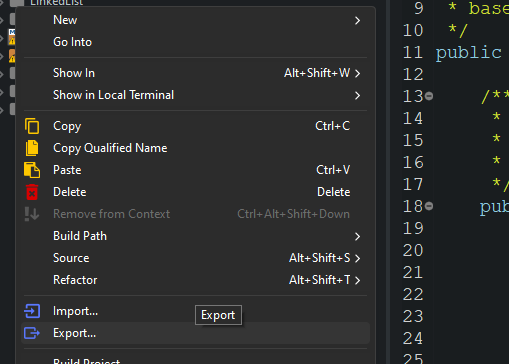

Empaquetar en .jar - Guía Detallada
Empaquetar tu aplicación en un archivo .jar es esencial para distribuir y ejecutar fácilmente tu software
Java. Aquí tienes una guía detallada para realizar este proceso paso a paso.
- Exportar proyecto Haciendo click derecho sobre el proyecto seleccionaremos la
opción de exportar

- Seleccionamos el tipo de jar que precisamos: Seleccionaremos a continuación la
opción de correr como un jar ejecutable
- Seleccionar la configuracion de despliegue y nombre final del .jar:
Seleccionaremos la configuración de lanzamiento de la app y la ruta donde se generará la aplicación
final..